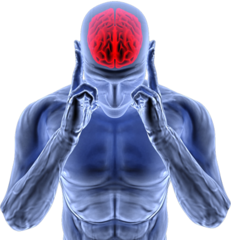
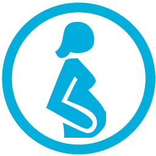

| Causas de Actitudes Depresivas |
|---|
 | CAUSA | DESCRIPCIÓN | |
| Factores Genéticos | La presencia de antecedentes de depresión en el ámbito familiar cercano (padres y hermanos) incrementa en un 25-30% la probabilidad de sufrir depresión. |
|  | Factores Fisiológicos | La aparición y cronificación de la depresión se ha relacionado especialmente con un descenso de los niveles de serotonina a nivel de las uniones neuronales. Por este motivo, en el tratamiento de la depresión se emplea en ocasiones un grupo de fámacos, los inhibidores selectivos de la recaptación de serotonina, cuya función consiste precisamente en modificar los niveles de serotonina que se encuentran alterados en estos pacientes. Existe, además, un grupo de enfermedades estrechamente ligadas a la aparición de depresión, la mayoría de ellas relacionadas con alteraciones endocrinas:MigrañaDiabetesHipertirodismoSíndrome de CushingEnfermedad de AdissonAmenorrea Hiperprolactinémica |
|  | Factores Personales | Se ha visto que existe un porcentaje significativamente mayor de depresión en mujeres que en hombres. La edad también es un factor influyente, y la franja comprendida entre los 35 y los 45 años es la de mayor incidencia de depresiones. El embarazo y el posparto son etapas vitales de la mujer con un mayor riesgo de aparición de depresión debido a las alteraciones hormonales sufridas. |
 | Factores Ambientales | Se consideran factores potenciadores de la aparición de este trastorno todos aquellos que son negativos para el sujeto (estrés, ansiedad, incapacidad de encauzar los problemas...) en cualquiera de sus ámbitos personales (laboral, familiar…), en especial si el sujeto se encuentra además en una situación de dependencia o consumo habitual de alcohol, tabaco, drogas, etcétera. Una situación de escasas o nulas relaciones interpersonales potencia especialmente estos factores. |